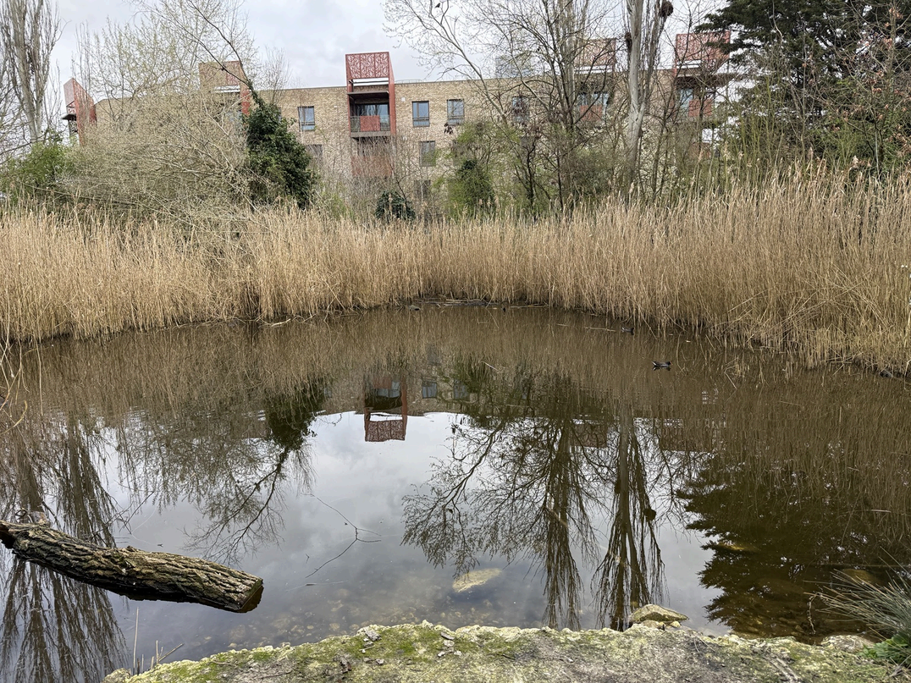
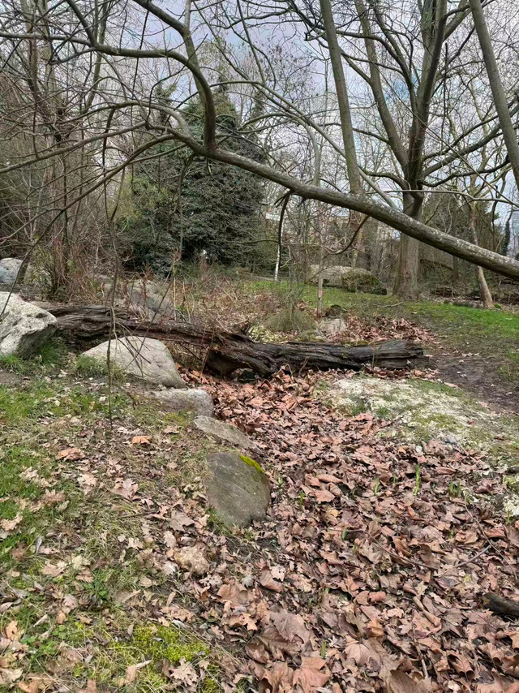
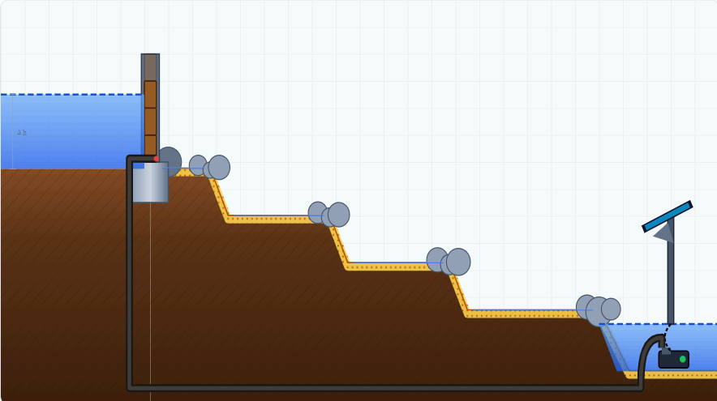
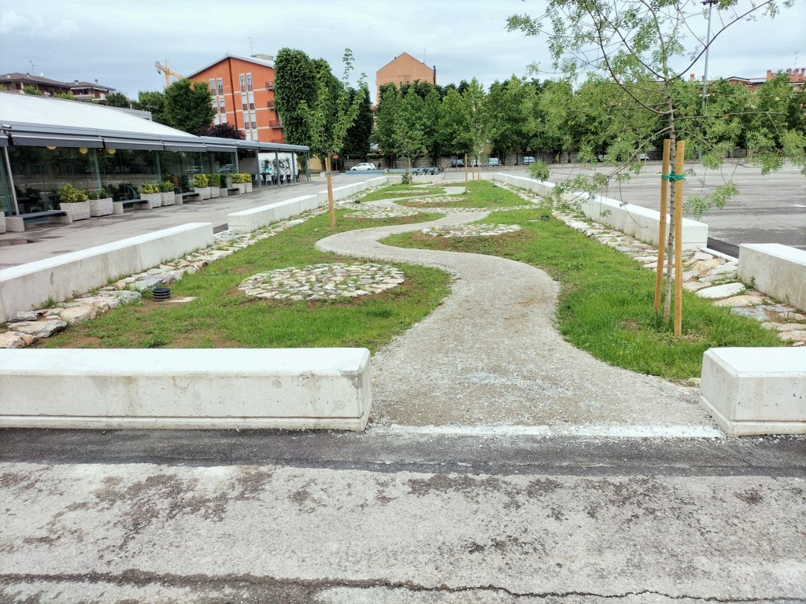
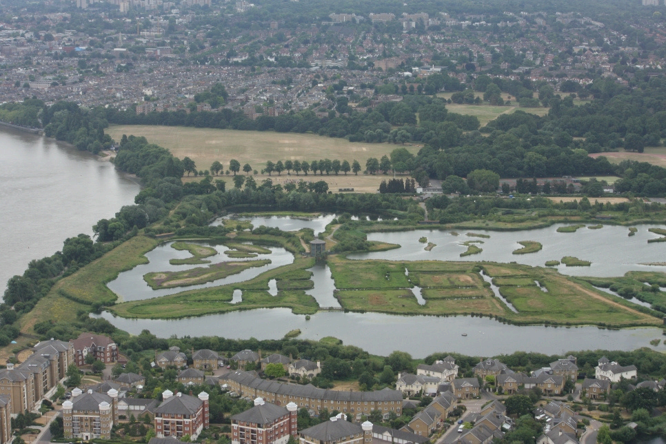
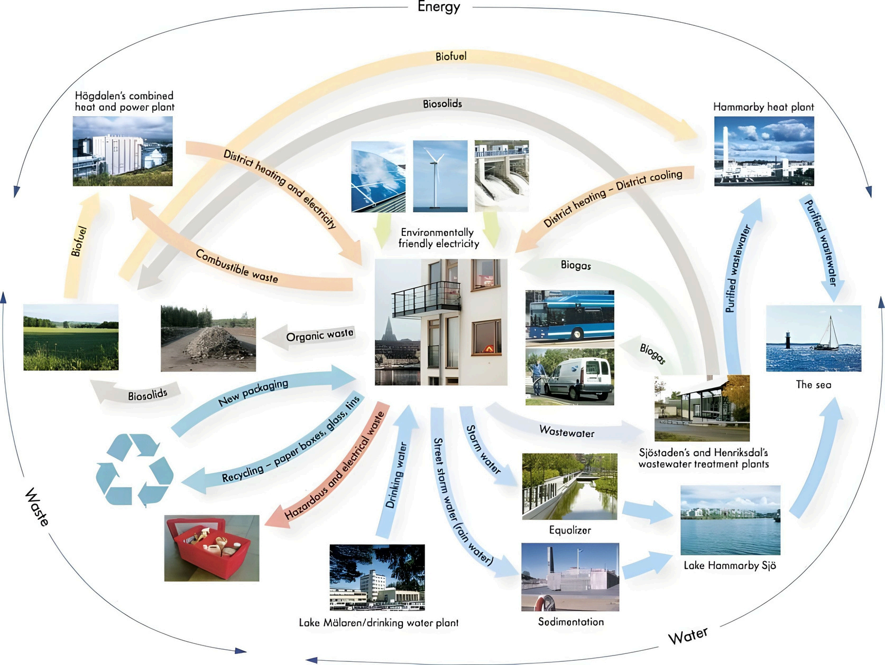

Why hydrology matters here
The hydrological system underpins habitat quality, biodiversity, and the wider ecological health of the site. The project found that the central issue is not simply water scarcity, but ineffective water input and management.
A systems-based analysis of the park’s hydrology suggested that upstream and downstream conditions are increasingly disconnected. Water is lost too quickly, circulation is weak, and maintenance pressures are high. The solution therefore requires better organisation of water, not just more supply.
Current challenges in the system
The PPT identifies a clear upstream–downstream disparity. Upstream, the priorities are desilting and ecological preservation. Downstream, the site experiences blocked channels, disrupted flow, persistent drying, and high operational costs.
Upstream pressure
Sediment accumulation and ecological decline reduce water quality and weaken the performance of the pond system.
Downstream instability
The downstream channel suffers from intermittent aridity, structural leakage, and degraded bed conditions that accelerate water loss.
Management challenge
The site is not failing because there is no water at all, but because water input, retention, circulation, and release are poorly coordinated.

Upstream pond condition
Site observations highlighted shallow water, reed overgrowth, low circulation, and signs of ecological degradation in the pond.

Downstream dry channel
The downstream reach shows interrupted flow and structural inconsistency, with water failing to remain in the channel for long enough.
Reactivating the pond ecosystem
The project diagnoses the pond as a low-energy settling basin in which sediment accumulates faster than it can be removed. Dense reed growth contributes to organic decay and water pollution, while limited circulation reduces oxygen levels and pushes the system towards eutrophication.
Main observations
- Sediment accumulation reduces water depth.
- Dense reeds contribute to organic decay and pollution.
- Limited circulation lowers oxygen levels.
- The pond is currently in a degraded ecological condition.
Design response
- Create a gravel transition zone to slow water and filter larger particles.
- Allocate roughly 10% of pond area as a forebay zone for sediment settlement.
- Introduce riffle zones with stone arrays to enhance turbulence and movement.
- Maintain open water by periodically clearing excessive reeds and vegetation.
Key idea: the pond should not function as stagnant water storage. It should become a more active ecological system in which water movement, oxygenation, and sediment control are managed together.
Repairing downstream flow
The downstream problem is linked to topographic inconsistency and historical degradation of the channel bed. Although the upstream source maintains a stable volumetric flow, the downstream reach suffers severe intermittent drying because water is rapidly lost through structural leakage and subsurface loss.
Structural proposal
- Line the downstream bed with natural stone.
- Re-profile the channel into a stepped sequence.
- Use stop log weirs for manual flow regulation.
- Create an end sump pond as a collection and control point.
Circulation proposal
- Install a solar pump system.
- Return water from the end sump to the start of the downstream reach.
- Support self-circulation during drier periods.
- Reduce dependence on constant external replenishment.

Closed-loop channel concept
The project proposes a stepped, controlled, and recirculating downstream system using stop log weirs, an end sump pond, and a solar-powered return pump.
Seasonal operating strategy
Rather than relying on one fixed water regime, the proposal changes how the system operates across dry and wet seasons. This allows the site to conserve water when necessary and use natural flushing processes when conditions permit.
The closed loop
Stop log weirs are closed to isolate the downstream reach and prevent further depletion of the upper source. A zero-carbon solar pump then recirculates water from the end sump back to the start of the downstream system.
Recharge and flush
Stop logs are removed to restore connectivity between upper and lower reaches. Higher flows naturally scour the stone bed, reduce anaerobic silt build-up, and help recharge groundwater before excess water enters the main drain.
From water supply to water input management
One of the most important theoretical shifts in the PPT is that the problem should not be framed simply as water shortage. The project argues that rainfall is rapidly lost as surface runoff before entering the system, and that the real challenge is how water is captured, retained, infiltrated, and slowly released.
Problem insight
The issue is not only limited supply, but ineffective water input processes and weak long-term management.
Design principle
Following a SuDS-informed approach, interventions should prioritise capture, retention, infiltration, and slow release.
Institutional implication
The challenge is partly organisational: the park needs a more structured and resilient system for managing inflow over time.
Key shift: not to rely solely on increasing supply, but to reorganise how water enters the system.
A phased water strategy
The project proposes a multi-stage transition from supply dependence to a more structured and resilient water system.
Optimise existing supply
Improve pumped water input efficiency, stabilise baseline water availability, and prioritise immediate low-cost interventions.
Localised rainwater input
Introduce edge-based rainwater entry and small-scale SuDS, such as rain gardens and swales, to improve on-site capture and infiltration.
Integrated water infrastructure
Combine rainwater and treated greywater systems, embed water management into wider urban development, and build system-level resilience.
Reference examples from the project
The PPT supports its long-term strategy with external examples showing how distributed drainage, controlled water levels, and integrated water systems can work in practice.

Queen Elizabeth Olympic Park
Used in the project as an example of distributed SuDS and localised rainwater management.

London Wetland Centre
Referenced as an example of controlled water levels and site-scale wetland management.

Hammarby Sjöstad
Used as a longer-term model for integrated water infrastructure linking water reuse, resilience, and urban systems.
Key takeaway
The central message is simple: this is not mainly a water shortage problem, but a system inefficiency problem. The long-term goal is to improve how water is captured, organised, circulated, and reused, so that the site becomes more resilient, biodiverse, and sustainable.